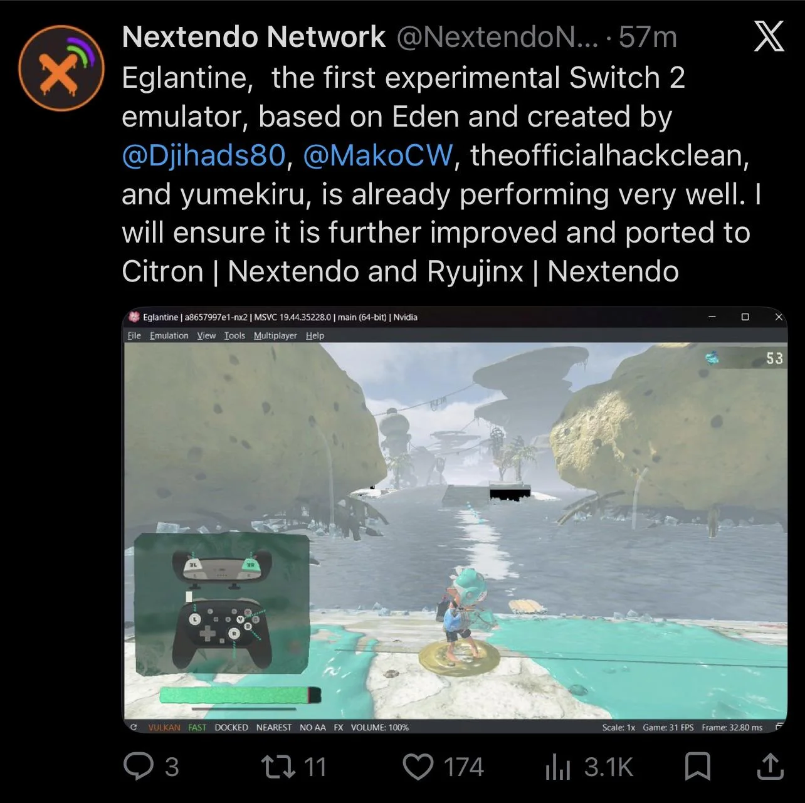
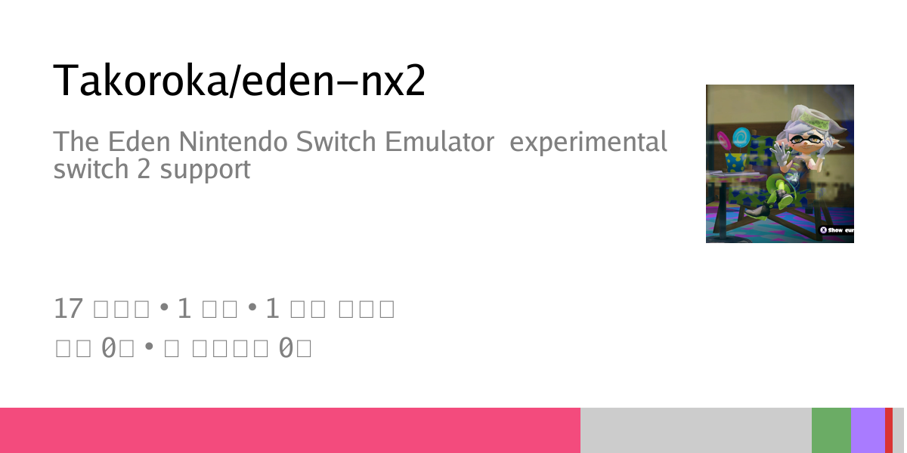
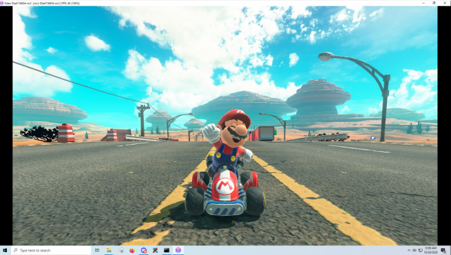

해커들이 AI를 활용해 스위치 2에서 롬파일 추출, 에뮬레이터 개발 성공



해커들이 AI를 활용해 스위치 2에서 롬파일 추출, 에뮬레이터 개발 성공
pc는 해킹 안됨?
저 게임들은 사실상 기기를 팔기위한 독점작이니까 pc에서도 구동 가능하게 해킹되면 의미가없어지지
대여 어쩌구 하던 놈들때메 이게 먼 난리냐
이거 근데 내가 잘못이해하고있는건가...
난분명 r4칩과 에뮬의 시대를 살았는데 그때랑 같은상황인거아닌가...
그때나지금이나 난이도차이야있겠다만 파일빼돌려서 뿌리는건 예나지금이나 가능했던거고
불따로 게임하는게 인식박살난지 한참지난거아닌가.
지금은 뚫리면 pc 스마트폰 여기저기서 굴리는거니
예전에야 저런게 나와도 기기가없거나 복돌하려면 뭔가 했어야하는데 그 장벽이 없어서 그런거아닐까
그 시절에는 사람이 한땀한땀 코딩하고 뚫어냈어야 했는데, 그래서 그걸 힘들게 하는 여러 수단이 생겼고, 그 난해함 때문에 접근성이 많이 떨어져가고 있었는데.. 요즘에는 AI때문에 훨씬 쉬워졌다는 게 중요한 것 같음
물론 원래도 있던 것들인데 좀 과하게 이슈몰이하는 거 아닌가 싶기도 하고
ㄹㅇ 근들갑 ㅈ됨
스위치1때는 에뮬로 정품은 안되던 60프레임 야숨을 돌렸었는데 스위치 망함? ㅋㅋ
ai 그림 나왔을 땐 작가들 다 조롱 당하고 게임사들이 일러레들 해고해 대면서 기뻐하던 때도 있었는데 이제 다 배끼고 다 훔쳐 가네...
창의성의 가치를 보존하려면 어떻게 해야 할까
닌텐도 역사를 생각하면 오히려 이게 좀 늦은편 아닌가
GBA같은건 출시일보다 덤프된 롬 돌던게 먼저였던 시절도 있었던거같는데
궁금한게 Ai말 나오기 전부터 이미 룸파일이나 에뮬을 써서 할 수 있어는데 저거랑 뭐가 달라?
존나 빨리 뚫린거에 머지않아 pc포팅해서 에뮬없이 돌리게 된다는거지
조금 더 있으면 에뮬이 문제가 아니야
네이티브로 그냥 돌아가
그래서 지금 맥미니가 가성비갑 되게.생겼어.
그리고 플스5도
스위지1 처럼 백도어라도 열어두지 그럼 기계는팔았을텐데
시간오카리나 롬파일로 했었는데
리메이크도 롬파일로 하면 이건 뭐 ㅋㅋㅋ
제발 ai발전해서 에임핵 esp 쓰는놈들좀 잡아줬으면 좋겠다
현실은 더 발전된 핵들이 활개를 치겠지
이러면 게임 개발을 누가 하나
난 돈 내고 하고싶다구
AI가 부가가치를 박살낸다
막는게 가능하긴 한가 이제 걍 콘솔장사는 포기하고 pc로 바로 내서 정품이라도 팔아야하나